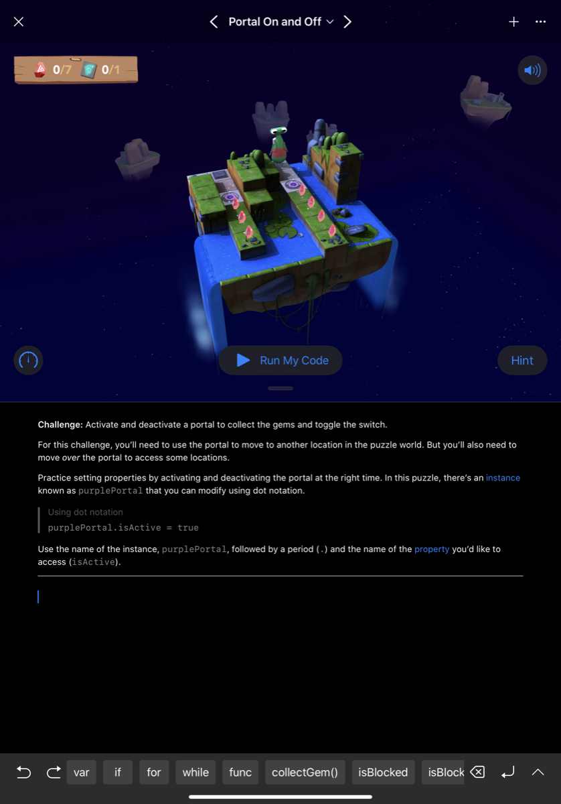
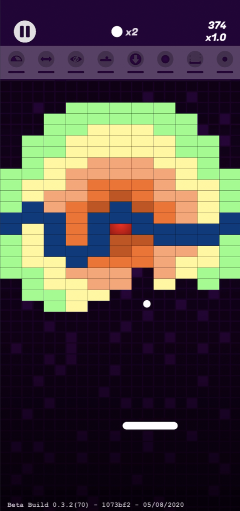
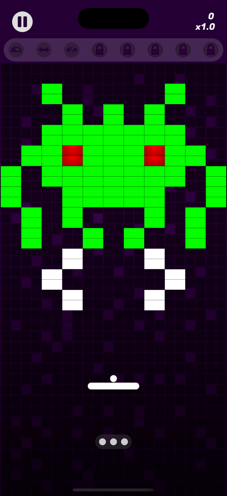

The birth of Giga-Ball
Something of my own
I always had an ambition to do something beyond my day job. By myself, for myself, on my own terms. I like my job as a Product Design Engineer, but being solely responsible for producing something is a novelty you do not often get at work, even as a designer.
I had plenty of ideas over the years and committed to none of them. The one I kept coming back to was an app. It appealed on several levels: an unquenched interest in programming, already owning the tools, being able to pick it up and put it down wherever I was, and not needing to rely on anybody else.
Failing to learn, several times
I have watched the Apple keynotes religiously since 2006, when I got my first MacBook, and the developer tools they showed off always fascinated me. School never exposed me to programming, so I assumed it was out of reach. At university I got as far as some Python, C# and Visual Basic, enough to recognise the logical way of thinking, the frustration of getting something to work, and the joy when it does.
After that I tried Stanford's free iOS courses several times. Each time I was out of my depth within a few sessions and gave up. There was a clear gap in my knowledge and I was too impatient to fill it, because I just wanted to make something. At work I squeezed programming in where I could, automating data processing in Excel VBA, going back to MatLab and Python, but it never scratched the itch.
Starting at the actual beginning
What changed it was an audiobook. Accidental Tech Podcast were advertising Creative Selection by Ken Kocienda, a former Apple engineer, about how the original iPhone's software was made, and in particular its keyboard. His stories about the excitement of getting something working, even cobbled together, set me off again.
This time I promised myself I would not rush at an idea. I would just learn, from scratch, with no goal beyond the enjoyment of it. In December 2018, on a 10.5 inch iPad, I downloaded Swift Playgrounds and worked through the tutorials, an hour or so every day, taking extensive notes as I went. My brain is a terrible way to store and manage data, so writing it down let me learn without the fear of forgetting.

Around Christmas I found a £10 sale on a Udemy course, The Complete iOS App Development Bootcamp by Dr Angela Yu. It covered everything from the basics to submitting an app to the App Store. Within days I was in Xcode pushing apps I had built to my own phone.
The tutorial trap
Six months into the course I still felt reluctant to start anything of my own. There was always more to learn, and I felt no closer to being able to implement any of it. Then I read a blog post by somebody who had learnt the same way, warning about the tutorial trap: enjoying the safe learning environment and never stepping out. Their advice was to take the leap and start a project, and keep learning that way instead.
The problem was that I had no idea worth building. I had made a small air quality app outside the course structure, reading global air quality APIs, and I was proud of it, but it was far too simple to release. Then I settled on a unit converter aimed at mechanical engineers. After a couple of months my motivation was falling fast. I was spending my time building table views and trying to hold protocols and delegates in my head, and I still did not know which code was supposed to go where. I stopped, and took a break from programming for the first time in nine months.
A floppy disk in a school break room
At school we had an old Macintosh in the break room. We would scramble for the floppy disk of Megaball and take it in turns. We loved that game. Out of hundreds we could have played, that was the one we came back to, because it struck a balance of fun, frustration and competition.
Years later I went looking for something like it. I enjoy casual games on the iPhone but it is rare to find one I love, and the App Store left me disappointed: the games either felt amateur, or were full of adverts and in-app purchases. Even the ones from the big studios felt devoid of any real fun. There was a gap I could fill with a throwback to a game I really loved.

The night it started
Staying at a friend's house in London, we got talking about what I had been doing, and I said the game idea out loud for the first time. It made me realise how much more enthused I was by it than by the converter. That night, trying to sleep on the sofa, I could not get it out of my head. I ended up on YouTube in the early hours watching Archetapp's tutorials on making a basic Pong-style game, and I was struck by how approachable Apple's SpriteKit looked.
I was excited again. Maybe this was within my reach.
As soon as I got home from that weekend, tired and with a sore back, Giga-Ball was born.
Making it real
Losing the thread
Between the day job, other hobbies and ordinary life, finding time was hard. I learnt that if I left it too long between sessions I lost my flow and forgot what I had been trying to do, and the longer the gap the higher the barrier to starting again. That gets out of hand quickly. September 2019 was three business trips, long hours and a holiday to prepare for, and by the end of it, with my motivation still high, I was scared to even open Xcode.
Redundancy
I took a week off in Tuscany with my wife in October 2019. A few days after getting back to the office I was made redundant from a job of seven years, along with 500 others, with three months' full pay on garden leave, effective immediately.
It was a difficult time, and I tried to find the positives. Three months at home while my wife went to work was a chance to take Giga-Ball from a hobby to something more. It did not quite work out like that. Several weeks went on supporting the business after the fact, and the rest on CVs, portfolios and interviews.
The UK, Singapore, or Australia
My wife and I had always been interested in living abroad, and we narrowed it to Singapore or Australia. My previous employer offered a role in Singapore with a one-month trial in the UK, which I completed in January 2020. I had also applied for a job in Australia and, after several rounds of interviews and testing, been offered it, pending a visa.
In January 2020 I took the Australian job, left the UK trial and my wife handed in her notice, all before the visa had been approved. If it had been declined we would both have been out of work. In February 2020 it came through, and I was due to start in Sydney at the beginning of April.
One week, and the borders shut
The six weeks that followed were a strange period. We travelled light, which was a good excuse to sell almost everything we owned. And Coronavirus was starting to make headlines. On 11 March 2020 it was declared a pandemic and cases were appearing closer to home. What if we caught it and could not fly? What if the flights were cancelled? What if they stopped transfers through Dubai?
On the evening of 14 March 2020 we moved our flights from the 21st to the 16th. It is one of the best decisions we have ever made: Australia closed its borders to international arrivals on 19 March. We packed and moved out of our house in a single day, dropped my wife's laptop at her office without a chance to say goodbye, and drove two hours to my parents'. By the evening of 17 March we were in a hotel room in Sydney.
Then fourteen days of quarantine in that room. Not the arrival we had imagined, but we were elated to be there, and it turned out to be an extremely productive fortnight for Giga-Ball. What else was there to do?
April, then July, then September
I started the new job on schedule. Working from home made the routine easy to keep, and I was putting a couple of hours into Giga-Ball most days of the week.
By then the scope had grown. In January the goal was to finish by April. In April the goal was July. By July it was September. I was not falling behind so much as discovering what I wanted it to be: it was my first app, and I wanted to be proud of it. I had come this far, and rushing it out would have been a waste.
How it was built
The bounce
I started with nine months of Swift behind me and carried on with the Pong-style game from the tutorial. One thing about it jarred: the ball simply rebounded off the paddle, which had no influence on where it went. The player was only keeping it in play.
Megaball gave you more control, sending the ball off at a fixed angle depending on where it struck the paddle. I did not love that either, because a ball arriving from the left and hitting the right of the paddle came back at almost the angle it arrived at, which is predictable but does not feel natural.
So I wrote an algorithm that takes both the angle of the ball on the way down and where it lands on the paddle. Right of the paddle sends it further right, left sends it further left. A few days of ups and downs later it worked, and I had learnt more about how SpriteKit handles 2D space, angles, velocities and contacts than any tutorial had taught me. I did not need another six months of those. I could learn as I went.
A fortnight to a playable game
By August 2019 I had stopped evolving the Pong game and started a new Xcode project, bringing the paddle algorithm across. Away on a business trip for a week, I spent each evening on bricks that disappear when the ball hits them, and by the end of it three of the four brick types that are still in the game today existed, along with a level to test them.
Before I flew home I had something I could show my colleagues. Less than a fortnight from starting, and the foundation was built. My motivation peaked; any moment I could find went into it.

A state machine, and a score that forgot itself
Early on the bricks sat right at the top of the screen, a long way from the paddle, so I set the ball speed high. Looking back it was ridiculous, but it felt right then.
Somewhere I picked up the idea of running a game on a state machine, and it became the framework everything else hangs off: Pre-Game, Playing, Game Over to start with, each able to run code on the way in and the way out. Moving from Pre-Game to Playing animates the paddle and bricks in; moving to Game Over animates them out. Over development it grew to hold the pause state and the between-levels state that resets the scene, sets the next level and records progress.
The score worked, and the high score worked until you relaunched the app, at which point it was gone. I started with NSUserDefaults because singletons were easier to think about, knowing full well I would need something more robust once I wanted to keep every statistic rather than one number.
Power-ups, which took forever
I expected the pace to rocket once I had time. It did not. Power-ups were next and they were slow. Falling squares first, appearing when the ball breaks a brick, caught by the paddle or lost off the bottom. Then what each one does: changing the paddle size and the ball speed, catching the ball, firing lasers, passing straight through bricks.
Every one was a new corner of SpriteKit, some of them steep. Centre rects, so a sprite grows without distorting. The different contact delegates, and how changing one alters every interaction. Then the timers and the icons and the progress bars, which took many iterations of their own. And then the combinations, which is where the real work is: catch a sticky paddle, then catch an expand paddle, and both graphics have to grow together.
The power-up code grew and grew and got harder to manage. Experience would have helped here. Looking back I would organise it very differently, but reorganising it now would break things and cost weeks to arrive back where I started. I used object-oriented practice where I could and kept to an MVC pattern where it was possible, which was not always. A seasoned programmer would be critical of it. It works, it is stable, and I know it inside out, which is the one advantage of working alone.

Drawing it, and drawing it again
The graphics were done in Sketch, and I went through iteration after iteration until things looked right. Looking back at the early designs I am glad I did, though over the course of development I must have spent at least a quarter of my time on graphic design.
Sketch became more valuable still for the levels. Using symbols, so one graphic can be referenced over and over, I designed all of them there before coding them in. I had tried building them in code first and quickly noticed I was tailoring each level to be quicker to type, which does not make for good-looking or enjoyable levels. It took weeks, and many attempts, to get them to look good and play well and still be hard.

Two things SpriteKit does not do well
SpriteKit made Giga-Ball possible, but it is not perfect, and two problems cost me a lot of time.
The first appeared when I slowed the ball down after moving the bricks closer to the paddle. At the lower speed, a ball meeting a surface at a narrow angle stopped bouncing and started gliding along it. I assumed it was my code until I found that it is a common complaint. I fixed as much of it as I could by reading the ball's angle on contact and setting the rebound myself, which is straightforward for walls and the paddle and much less so for bricks. A trace of it is still there today, resolved far enough that it does not take away from the game.
The second, also still there, is the ball behaving unpredictably when it lands on the seam between two bricks, most visibly on indestructible ones. Apple recognise it. I tried several approaches and none of them fixed it without breaking something else.
Building the app around the game
The game was coming along and the app around it did not exist. I wire-framed in Sketch to work out what screens I needed and how they connected, then built the pause menu, the main menu, the between-levels and game over screens, and the settings. It took a large chunk of time and put the Udemy course into practice, which by then felt like a long time ago.
I wanted the app optimised for when these games actually get played: a few spare minutes on the bus, in a queue, on the sofa. Easy to pick up and put down, easy to navigate, playable with one hand, with the controls kept towards the bottom of the screen. That is where a lot of the small features come from: swipe up to pause, the countdown when you come back, the direction marker around the ball on resuming, disabling the home bar on the first swipe so it cannot be triggered by accident, a ball reset for the rare times it gets stuck, and hidden bricks flashing when the ball hits the paddle if nothing else is visible.

Game Center and iCloud sync were big learning curves on top of that. There were plenty of moments when leaving them out, or saving them for a later version, would have been quicker. That felt like a compromise I was not willing to make, even at the cost of extending development.
Released
Giga-Ball went on the App Store in September 2020 with 110 handmade levels, 28 power-ups, an endless mode, Game Center leaderboards and iCloud sync. No adverts, no in-app purchases, no tracking, which was the point of building it in the first place.
Looking back at that year, the only constants were my wife and Giga-Ball. I am not sure how I would have filled the time otherwise. From the weeks of garden leave to the fortnight in quarantine, it was good to have something to be creative with, feel productive about, and be proud of.

Still going
Six years later, the same person and the same evenings. It was downloaded more than 3,000 times in its first year and is rated 4.5 out of 5, and version 1.3 is on the way.
See what is coming in 1.3